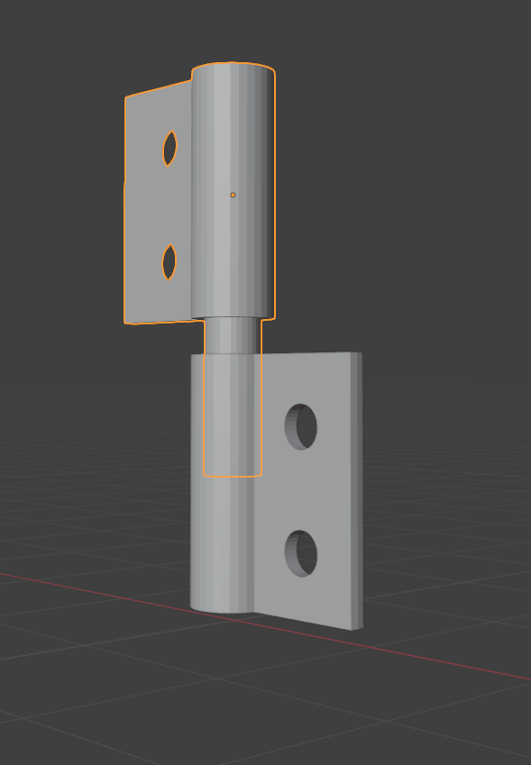

EP Art Studio ©
Teatro dei Burattini
di Edmondo PiazzaQuesto progetto nasce dalla voglia di far rivivere il caro e vecchio teatro delle Marionette sicialiane,
cercando di rivestire la tradizione di modernità, dando vita a storie che sono quasi dimenticate dalla nuova era.
Quindi si propone la costruzione di questo nostro teatro dei burattini in chiave moderna e originale, che ci porta indietro in tenera età.
Il progetto è in fase di sviluppo e richiede la revisione di alcuni adetti competenti per il bilanciamento delle meccaniche, il collaudo e la revisione.
Il progetto è stato realizzato con il software di modellazione 3D Blender e il software di grafica Gimp.
Lo sviluppo fisico del progetto verrà stipulato con i collaboratori durante i breefing di gruppo.
IlTeatro dei burattini vuole rappresentare la sinergia della collaborazione di un gruppo di esperti del settore artistico, marcando e favorendo lo sviluppo artistico e collettivo di un guadagno sociale per gli spettatori.
Caratteristiche
Questo progetto presenta caratteristiche meccaniche di tipo risoluto, come cerniere fissate ai componenti e assemblati sul posto, con una dinamicità di movimento e di trasporto.
Il teatro dei burattini è composto da una struttura pieghevole, con base retraibile, adatta alla versatilità e vestita di luci di scena, per dare vita a storie e scenografie, panneggi e sfondi, che si muovono e si trasformano. Un sipario che si apre e si chiude, un rullo da sfondo scenografico, una substruttura che unisce i lati, un teatro che si piega e si ripiega, insomma un teatro che si trasforma e si trasporta.
Struttura
Il teatro dei burattini è composto da:
Struttura complessiva
pieghevole
lati pieghevoli
retro
base retraibile
con cerniere di metallo per piegarlo
implementazione di luci di scena
Completamente pieghevole utile per riporlo
rullo da sfondo scenografia
substruttura che unisce i lati
burattino
burattino
EP Art Studio © 2017
La Marionetta
La Marionetta sarà composta da materiali riciclati, come scarti di legnami o di plastiche dure, inoltre la meccanica per la snodabilità si riduce a dei sempli occhielli in acciaio.
Funzionalità
Il teatro delle MArionette è composto da:
- Struttura pieghevole
- Base retraibile
- Implementazione di luci di scena
- Completamente pieghevole utile per riporlo
- Rullo da sfondo scenografia
- Substruttura che unisce i lati
La struttura è dotata di cerniere in metallo che permettono sia piegare la struttura che smontarla pezzo per pezzo e trasportarla.
Scenografia
Il progetto prevede una scenografia vestita sul momento, come un panneggio statico provvisto di due tende raccolte, un rullo di scena che ad ogni scena gira per cambiare lo sfondo.
Il resto della struttura verrà dipinto a mano con motivi allegorici della tradizione dei burattinai siciliana.
La meccanica dello scorrimento dello sfondo può essere sia verticale che orizzontale a seconda dell' esigenza.
Installazione
Il progetto è in fase di sviluppo e richiede la revisione di alcuni adetti competenti per il bilanciamento delle meccaniche, il collaudo e la revisione.
- Attrezzi per il montaggio = 0;
- I lati forniti di cerniere a incastro dovranno essere posizionati e incassati con la substruttura centrale
- Il telaio che crea la substruttura unita ai laterali tiene in piedi come un separè la struttura intera
- la base del teatro verra appoggiata sul retro della strutura creata e la base si appoggierà sugli scalini dei laterali creati appositamente 
Le storie
Le storie sono scritte e dirette dal gruppo teatrale che prende in carico il progetto, in questo caso come esempio ci sono le idee di Edmondo Piazza